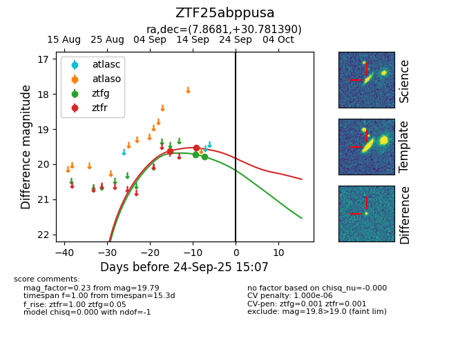

FINK: ZTF25abppusa
Lasair: ZTF25abppusa
ALeRCE: ZTF25abppusa
ZTF25abppusa (ztf,fink)
equatorial (ra, dec) = (7.8681,+30.78139)
galactic (l, b) = (117.8810,-31.89448)

last ztfg=19.79, ztfr=19.53
2 ztfg, 2 ztfr detections